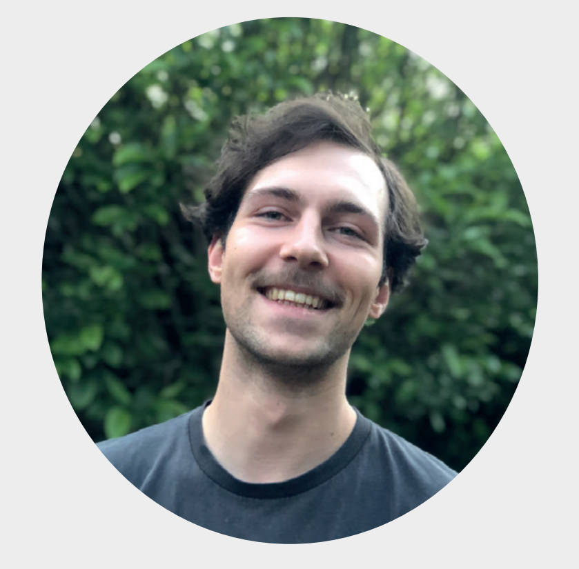

This is the resume of Max van der Heijden.
Check it out to see where I've worked and what I've done.

Education
- Higher general education, Udens College 2013
- Industrial product design, HAN Arnhem, 2018
- Crossover creativity, Art academy Utrecht, 2019
Work experience
- Albert Heijn, Uden, Supermarket employee, 2010-2012
- De Pul,Uden, Bar Employee, 2011-2016
- DHL, Uden, Parcel delivery, 2016-2017
- Cusco, Uden, Kitchen help employee, 2018
- Tanuki, Uden/Oss, Kitchen help employee/Food delivery, 2019
Skills
- Drivers licence
- Dutch (native), English (C1)
- Coding, 3D/graphic design
Personality
- Communicative, analytic, creative
- Best spacial visualization on the planet
Contact information
Personal life